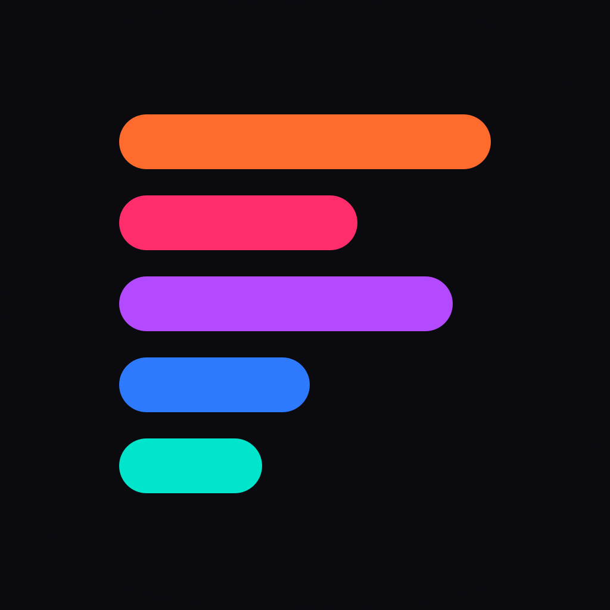
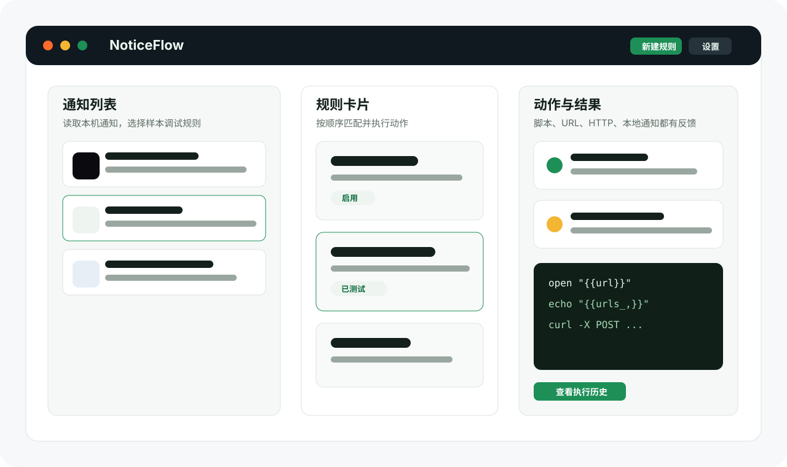

链接处理
自动打开通知中的链接，或把所有 URL 传给脚本继续处理。

NoticeFlowmacOS 12+ / Tauri / 本地优先
NoticeFlow 读取本机 macOS 通知数据库，用规则匹配通知内容，并执行你配置的动作：打开链接、启动应用、发送本地通知、HTTP 请求或本地脚本。
读取通知
匹配规则与变量
执行动作并展示结果

使用场景
NoticeFlow 不试图替代通知中心，而是把系统通知变成可匹配、可测试、可执行、可追踪的本地自动化入口。
自动打开通知中的链接，或把所有 URL 传给脚本继续处理。
匹配特定应用和关键词，把重要通知发送到自建 webhook。
用 Python、JavaScript、Shell 或 AppleScript 衔接本地工具。
归档、隐藏或显式删除不需要长期保留的通知记录。
核心能力
变量
动作中可以使用 {{title}}、{{body}}、{{app}}、
{{url}}、{{urls}}、{{time}} 和正则捕获变量。多个 URL 默认用空格拼接，也可以用
{{urls_,}} 这类形式指定分隔符。
open "{{url}}"
/Users/me/scripts/handle-links.py {{urls}}
echo "{{urls_,}}"安装
隐私与安全
NoticeFlow 默认不会把通知内容发送到远程服务。规则、设置、通知归档和动作历史都保存在配置的数据目录中。HTTP 动作和脚本是否发送数据，取决于你的规则配置。
FAQ
macOS 通知历史保存在本机受保护的 usernoted 数据库中。NoticeFlow 需要读取该数据库才能展示和匹配通知。
当前 DMG 没有做 Apple Developer ID 签名和公证。GitHub 分发可以使用，但首次打开需要手动允许。
NoticeFlow 本身不会默认同步通知内容。脚本和 HTTP 动作由用户配置，如果脚本调用网络工具，数据可能离开本机。
不完全一致。NoticeFlow 规则校验和后端匹配使用 Rust regex 引擎，不支持 look-around 和 backreference。
开始使用